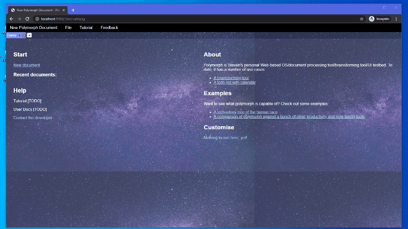

Hello! I'm Steven, and I'm currently a student at the University of Sydney, set to graduate in 2023. I study Mechatronics and Project Management, but I learnt to code in 7th grade and haven't stopped since then!
I've also been teaching for a long time; starting from teaching physics, to mathematics, to robotics; and I've developed a lot as a teacher and a communicator since my first time teaching. As a teacher I pride myself on not only sharing information but also creating tangible learning assets for future generations.
Here are a small sample of my projects from recent years. Check them out!
You can reach out to me via email at steeven.liu2@gmail.com; and if you find an @acenturyandabit somewhere on the internet, it's probably me :)
Model UN 2025 came from a brief to create an activity centred around leadership principles. This game pits 3-5 players in negotiations with each other to collectively determine a set of policies that will decide the fate of their nations, under time pressure and with differing motivations.
For this project, I used Vanilla Javascript and a NodeJS backend, with Websockets for real time communications. Various challenges I overcame in this project include designing the engine to be disconnect- and cheat-proof; designing the game logic itself so that it could be played as a fast-paced 15 minute game; and coming up with all the countries and bill proposals!
The game is currently hosted on my linode server.
Since my first days experimenting with Visual Basic, I've always been in awe of software's ability to deliver stunning and practical user experiences. My first foray into this was in a humble Todo list app, which had one column for tasks and one column for descriptions for those tasks.
However, this didn't feel good enough. I wanted to be able to rearrange the tasks in any order I wanted. I wanted to use this cross-platform and cross-device, even without a stable internet connection. I wanted to build in a KMS and CMS on the side. And most of all, I wanted to be able to add new features and mix things up on the fly.
Thus, from the forges of 5 paradigm shifts over as many years, comes my pièce de résistance, my modular masterpiece, my Windows 10: Polymorph!
Polymorph integrates a lot of my learnings, including: modularity; event hooks and broadcasts; profiler optimisation and various web technologies. Although Polymorph was built for a very, very specific niche (just me!), I do dream that one day I might bring polymorph's unique abilities of high-latency tolerance, seamless multi-modal representation of a single dataset, and space-efficient and context-switching-friendly tab and panel system to a wider audience. It's also super moddable, since it doesn't require any build tools or libraries aside from a javascript interpreter, which everyone has anyway.
You can try out Polymorph on github, albeit with localStorage saves only.
The USYD Robotics Club is the University of Sydney's most accessible hands-on engineering club. I've been with the club since the second year of its existence, and have poured in lots of love, ingenuity and dedication into it.
The story of the USYD Robotics Club started in 2017, when a group of USYD students decided to enter a number of student-friendly competitions around Australia, including the QUT Drone Racing Competition, the Robot Art competition, the NIARC robotics challenge. Unfortunately, this was not to last, as the sponsors for RobotArt and NIARC pulled out, shutting these competitions down. COVID dealt a final blow to our club by taking away any possiblity of in-person events...
... and that's where I came in, as executive-turned-club-president in 2019-21. And boy did I come in swinging:
Overall I'm incredibly glad to have the opportunity to be a custodian of the club, not only because it aligns with my passions, but also because it has given me insight into the amount of work that an an enterprise needs to adapt to circumstance and stay afloat.
Although I know that well-paying software careers depend on enterprise software contracts which can be rather dry, I'll definitely still spend time working on my personal projects. I really want to see Polymorph live up to its potential someday; I'd love to play with neural networks more; and I'll also strive to keep robotisc in my hobby diet to ground my work to physical reality.
Naturally though staying alive and committing to hobbies like robotics is expensive, so I'm looking to put my software skills to work to create value for the wider community and earn my keep. If you're creating value and need a software developer to help develop new products, keep your ship running, or come up with new ideas, I'd love to join your organisation! Please reach out to me via email, and I'll hear from you soon!